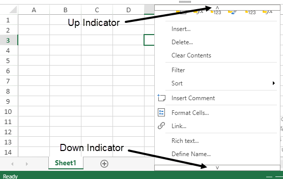

A context menu is a single-level or a multi-level pop-up menu that offers a set of choices (called menu items) when a user interacts with the worksheet via right click mouse operation and offers a set of choices.
SpreadJS supports a built-in context menu that appears when you trigger the right click mouse event on the spreadsheet. It provides you with the flexibility to quickly execute some of the important operations or repetitive actions in a spreadsheet. The menu items are displayed on the basis of the area clicked in the worksheet and you can add and remove custom menu items to customize the structure of the context menu.
The image shared below shows the built-in context menu along with up and down indicators. These indicators appear if the menu is not fully displayed in the window. Hovering on these indicators scrolls the menu in their respective direction. You can also click on the indicators if you want to scroll to that respective direction immediately.

SpreadJS supports the customization of the built-in context menu using GC.Spread.Sheets.ContextMenu.MenuView class. You can rewrite the defined context menu style class to apply different styles. You can also add or remove custom menu options for both single-level and multi-level context menus as per your preferences. However, the generated response is based on the menu view and the contents of the menu depending on which area is clicked by the mouse.
SpreadJS provides the similar theme for Context menu as that of Spread hence you can modify the menu view appearance and its structure. You can alter the filter context menu data result as well.
The allowContextMenu property of GC.Spread.Sheets.Workbook class provides users with an option to control whether to show the built-in context menu or not. By default, this option is set to true and you will see a context menu every time you right click on the spreadsheet.
You can also set the max height of the context menu as well as whether to display scrollable indicators by using their MenuView class methods respectively. The MenuView.maxHeight method accepts an integer value whereas the MenuView.scrollable method accepts a boolean value. By default, it is set to true to display scroll indicators.
| JavaScript |
Copy Code
|
|---|---|
// If you don't want to use the context menu, turn off the context menu option var spread = $('#ss').data('workbook'); spread.options.allowContextMenu = false; // Setting the context menu scroll property to true. spread.contextMenu.menuView.scrollable(true); spread.contextMenu.menuView.maxHeight(400); |
|
This property allows you to customize the view and structure of the menu item using the MenuView.createMenuItemElement method.
| JavaScript |
Copy Code
|
|---|---|
var spread = new GC.Spread.Sheets.Workbook(document.getElementById('ss')); function CustomMenuView() {} CustomMenuView.prototype = new GC.Spread.Sheets.ContextMenu.MenuView(); CustomMenuView.prototype.createMenuItemElement = function (menuItemData) { // create menu item view by your self // you can call super's createMenuItemElement here and only customize a few of menu item // should return menu item view back }; spread.contextMenu.menuView = new CustomMenuView(); |
|
This allows you to add or remove custom menu options in a context menu. Each of the options follow the defined menu data in the JSON schema.
| JavaScript |
Copy Code
|
|---|---|
//Define menu data var openDialog = { text: 'Open Dialog', name: 'openDialog', command: showLoginDialog, workArea: 'viewport' }; spread.contextMenu.menuData.push(openDialog); function showLoginDialog() { //to do something } // Add/Remove the custom menu options $.each(spread.contextMenu.menuData, function (p, v) { if (v.name === 'openDialog') { //openDialog is a command's name spread.contextMenu.menuData.splice(p, 1) } }); |
|